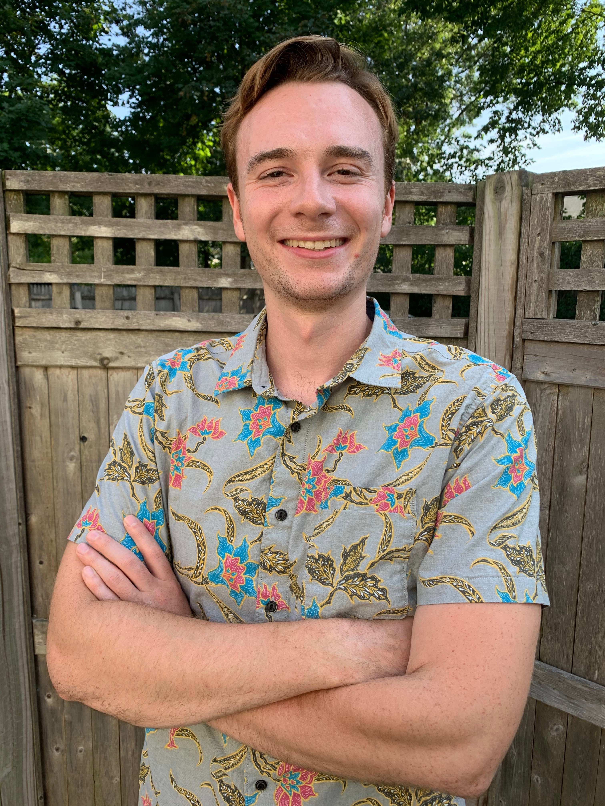

B.A. Social Thought & Political Economy
University of Massachusets Amherst.
M.A. Linguistics
Graduate Center,
City University of New York (CUNY)
B.A. Social Thought & Political Economy
University of Massachusets Amherst.
M.A. Linguistics
Graduate Center,
City University of New York (CUNY)
I’m a first-year PhD student in the Linguistics Department at Yale.
I am a first-year PhD student in the Linguistics Department at Yale. My primary advisor
is Jason Shaw. Broadly, I am interested in the relationship of linguistic knowledge to its
physical implementation. Most recently, my research has investigated the phonetic effects of
lexical and phonological contrast using the dynamical model of speech planning developed by
Roon and Gafos (2016). the temporal aspects of language and speech, at the relatively long
time scales of learning, as well as the relatively short time scales of speech planning,
production and perception. I am interested in the use of dynamical systems to model the
interactions between knowledge, articulation and perception.
Before coming to Yale, I got my MA in Linguistics at the Graduate Center,
City University of New York (CUNY). My thesis, advised by Kyle Gorman and
Gita Martohardjono, examined…While at the Graduate Center, I also worked in the
econd Language Acquisition Lab (SLAL) under the advisement of Gita Martohardjono.
Primarily, I worked
I am continuing to work with Veneeta Dayal, in collaboration with Gita Martohardjono
and Sherry Chen at the Graduate Center, City University of New York, to investigate...